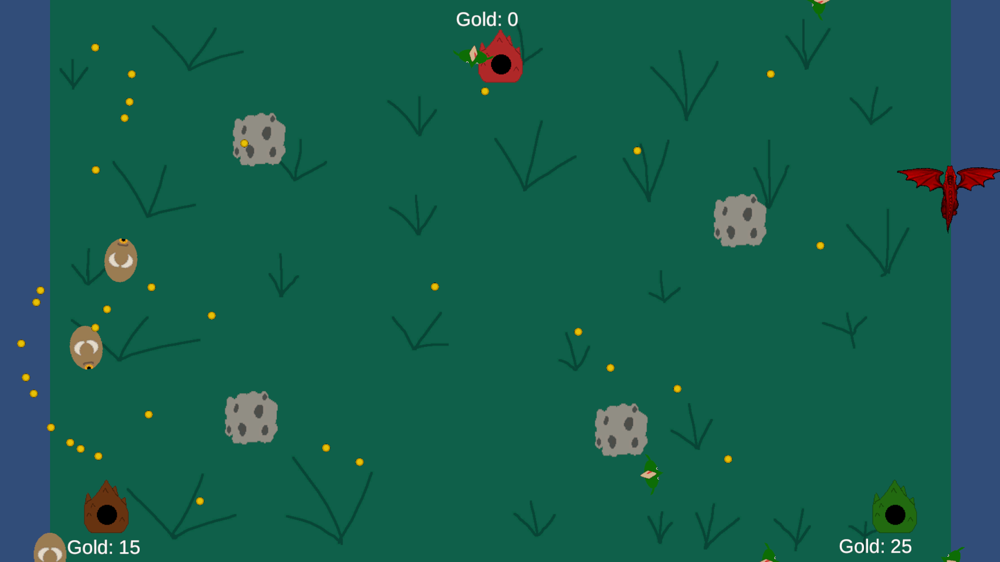
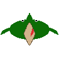
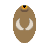
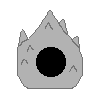
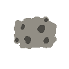

Treasure Grabbers is a simulation focused around flocking behaviors.
There are three groups of creatures, each attempting to gather coins to
bring to their respective hoards. The creatures behave as follows:

Goblin Sprite.

Cyclops Sprite.

Hoard Sprite, color tint applied in Unity Engine.

Boulder obstacle Sprite.
Dragon sprite created by ZaPaper and Jordan Irwin
Accessed from OpenGameArt.org
Created by ZaPaper & Jordan Irwin (AntumDeluge);
Credits to Buko Studions
Commissioned by PlayCraft